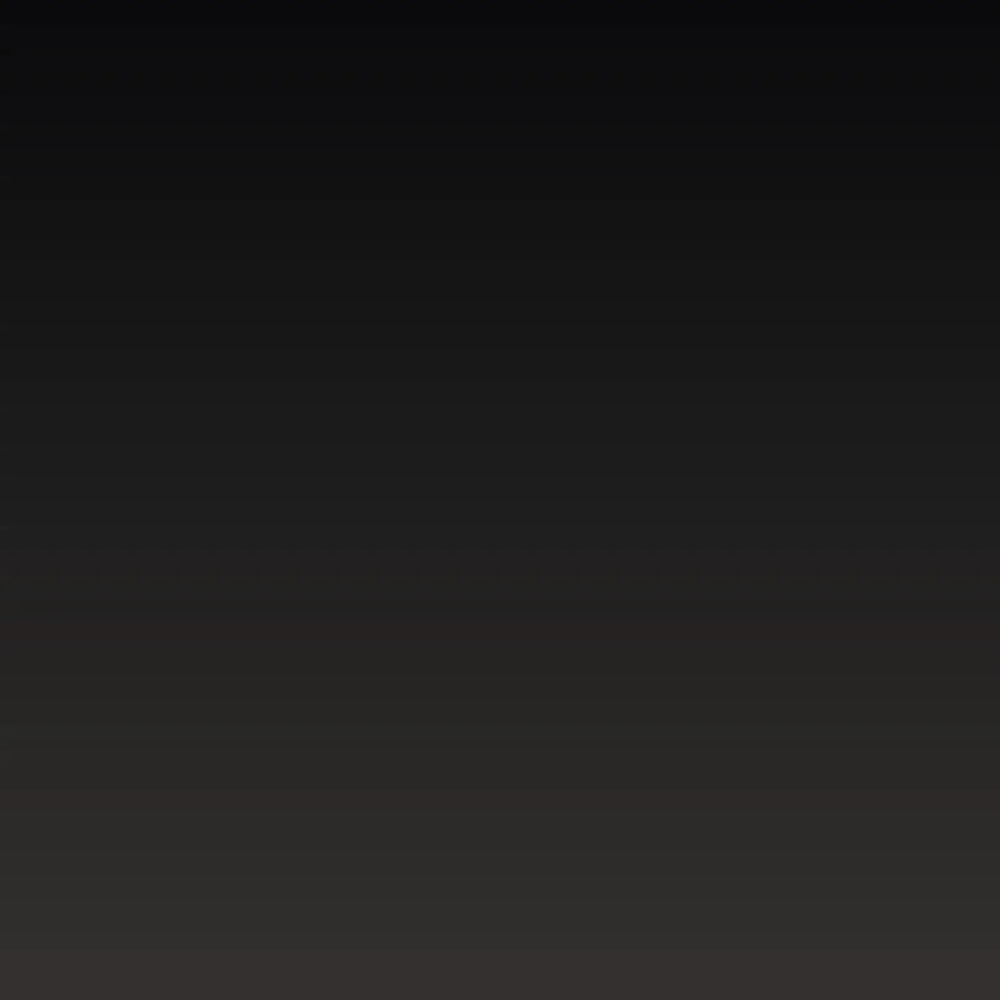
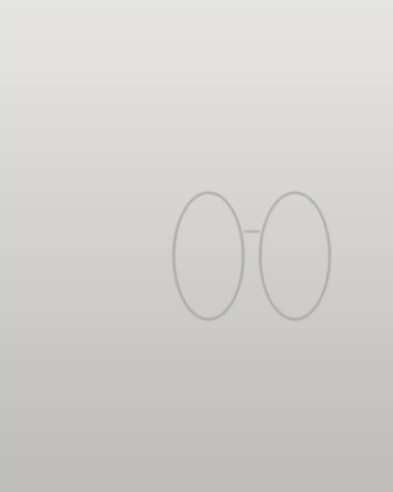

Fotografia de uma armação de acetato fumê com hastes metálicas sobre pedra preta.
Precisão que vira presença.
Armações para quem repara nos detalhes, escolhidas com calma e provadas na loja da Avenida Pontes Vieira.
O que faz uma armação durar não aparece de longe.
Chegue perto. A forma como a peça abre, fecha e apoia no rosto diz mais do que a vitrine.

Formato, presença, material.
Três escolhas para chegar na loja sabendo o que procurar. A equipe separa opções parecidas para você provar.

A lente certa começa na sua receita.
Tipo de lente, espessura e tratamento são definidos na loja a partir da receita do seu oftalmologista. Aqui no site você só escolhe o estilo.
- Leve a receita atual, física ou foto.
- Se já usa óculos, traga os atuais para comparar.
- Tem convênio por associação? Pergunte na loja.
Dionísio Torres, Fortaleza
Av. Pontes Vieira, 2250 loja 10
Horário de funcionamento: confirmar com a loja.